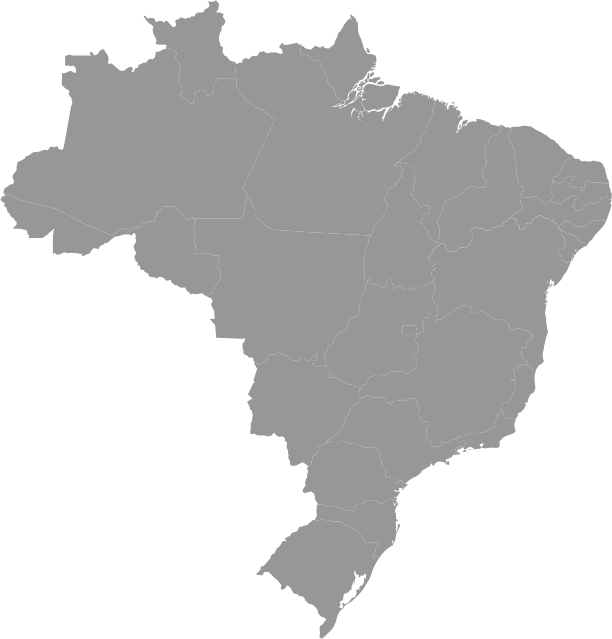

Sobre Nós
Somos apaixonados por facilitar a vida das pessoas. Nosso buscador de CEP foi criado para oferecer uma experiência rápida e intuitiva, ajudando você a encontrar o CEP de qualquer endereço no Brasil com apenas alguns cliques. Nossa missão é ser sua ferramenta indispensável para envios, entregas e pesquisas.
Confiabilidade
Encontre qualquer endereço com facilidade! Digite o CEP e nós encontramos todas as informações para você. Utilizamos a confiável API do ViaCEP para garantir resultados precisos.